Berlin
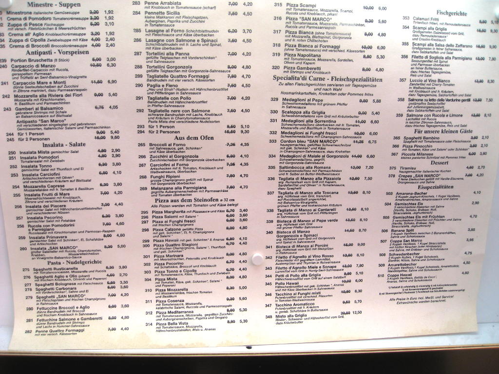
As planned, I spent my time in Berlin with my girlfriend, Aliona. We found two hosts via couchsurfing.com
and also had planned to meet up with a bunch of the people from around
the world that I've chatted with. We found where our first
host lived, but he wasn't home yet and we were hungry. We were
blessed to find many restaurants including this one with a variety of
food comparable to many diners back home. Mostly Italian.
Strangely, many of the prices were crossed out, but I'm happy
that they were accompanied by cheaper prices which were not crossed out.
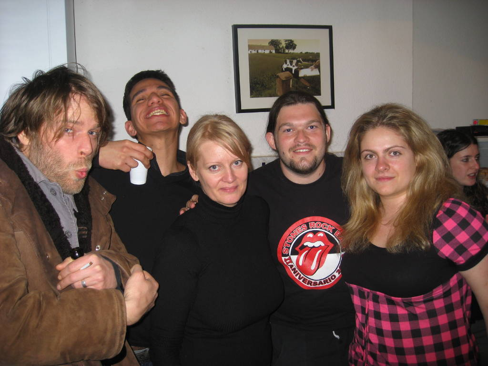
The
star attraction of the Berlin trip was the couchsurfing chatter party.
On the right, of course, is Aliona, and in the middle is Andrea
of Doncaster, England, who I became friends with during my stay in
Dublin. The party was hosted by a big but friendly German dude
named Caspar. I gave him a very hard to use remote controlled
helicopter as a gift. There was plenty of alcohol to be had, as
you probably can already tell by the two on the left, Florian (Flo) of
Berlin on the far left and Vato of the Netherlands in the back. I
forget who the other dude was.
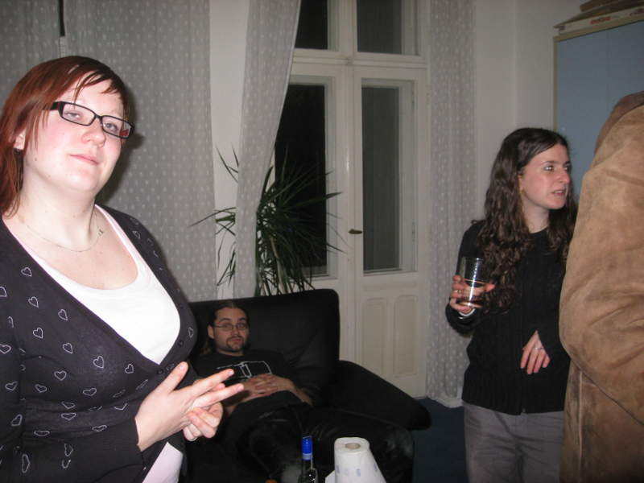
To the left is Lin from the Netherlands.
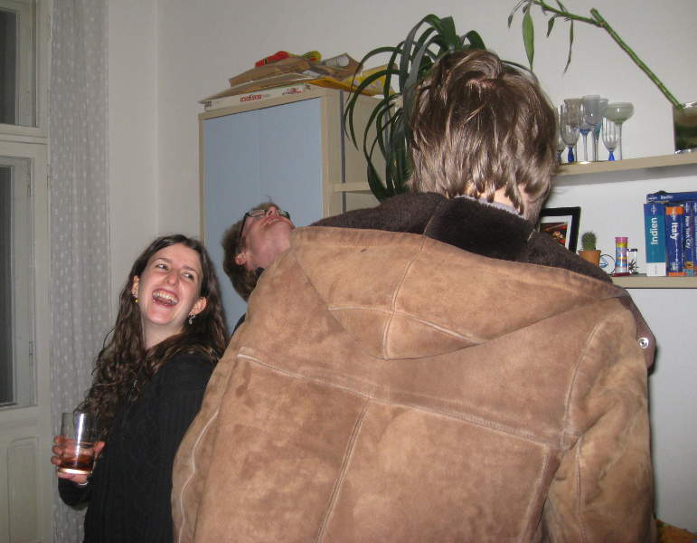
Natalie from Spain laughs as Flo knocks out "Bionce" of Berlin in a drunken brawl.
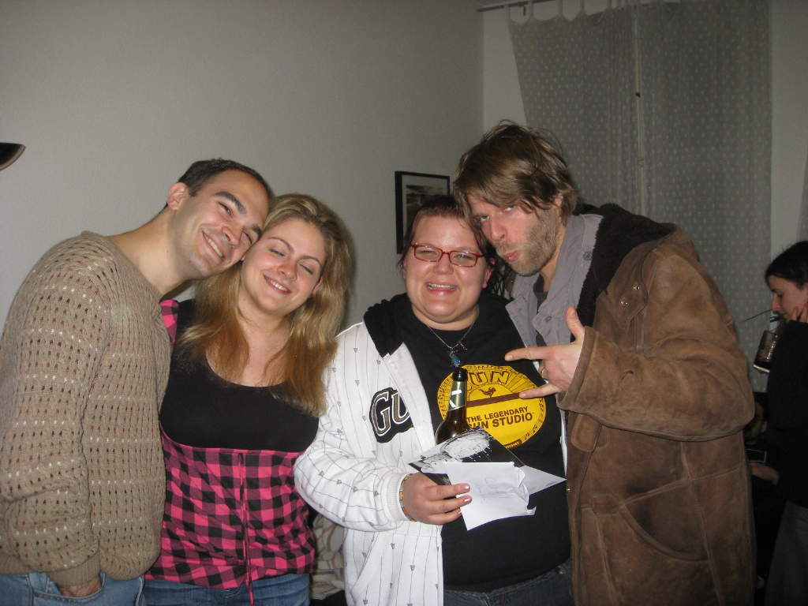
My
head suddenly became heavy and landed on Aliona's temple, rendering her
momentarily unconscious. Flow is yucking it up with Cat from Iowa.
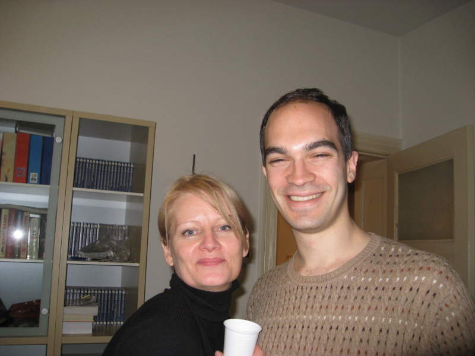
Andrea
and I, catching up on good times in Dublin. Vanessa of France and
Yoavick of Finland, the other half of our motley crew, unfortunately
couldn't make it.
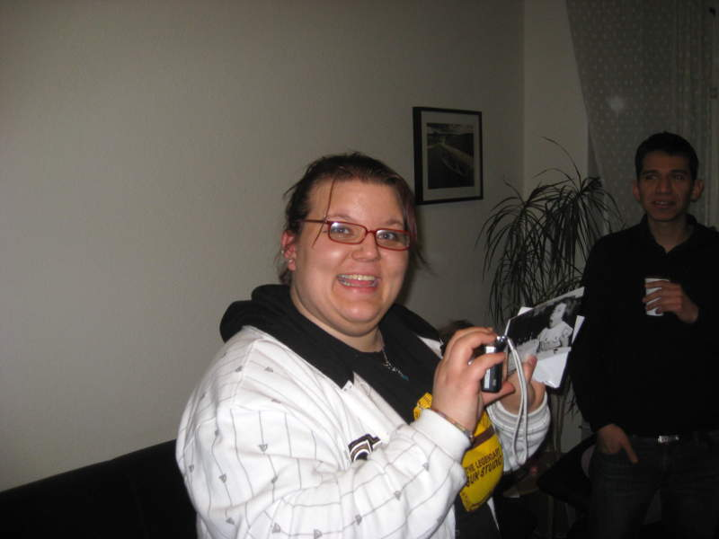
Cat adding to her collection of pictures. You can't imagine how exciting these trips are for people from Iowa.
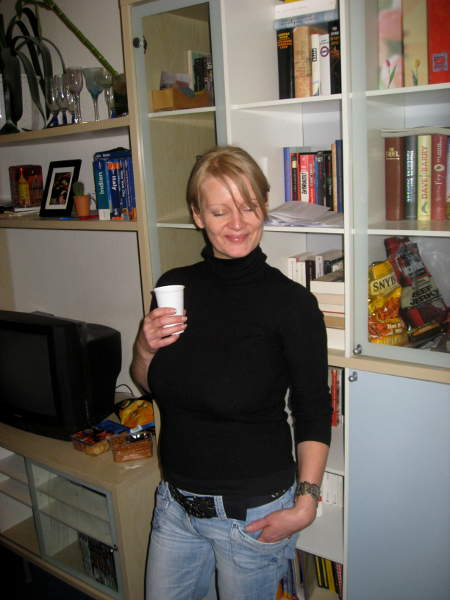
Andrea's done.
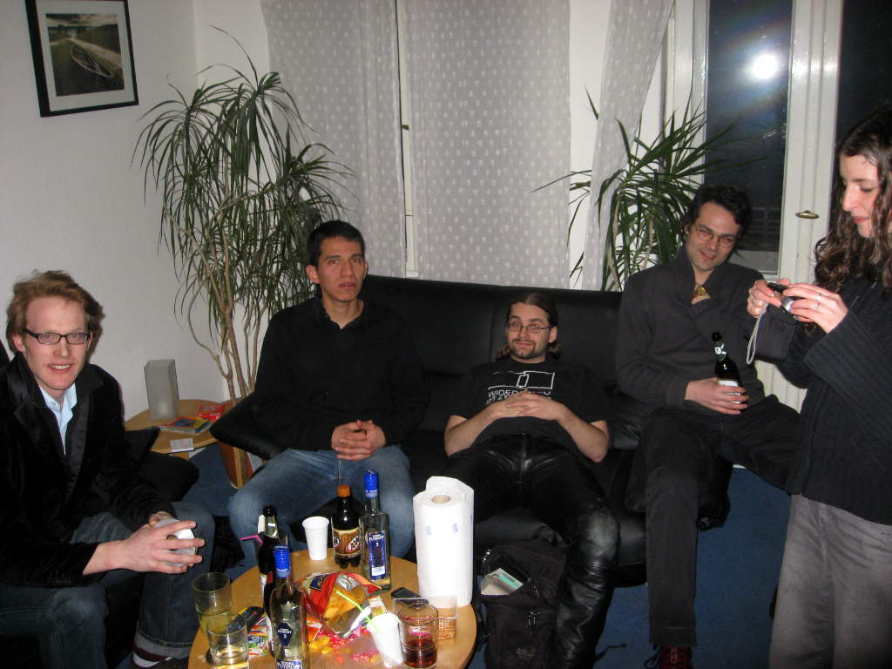
Can't get more laid back than this bunch.
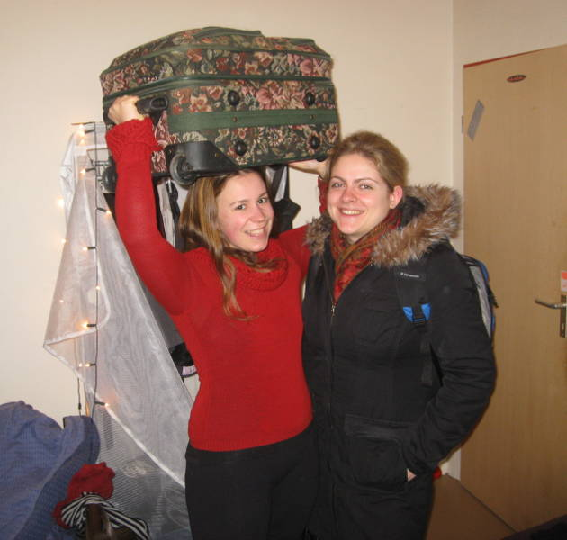
We
met up with our second host, who I actually got a picture of. Our
first host, Michael, was pretty interesting. He's an artist that
made an interesting creation involving a grid of matchboxes from all
over, which inspired me to create my own artwork one day. Our
second host, Daniela, was also a free spirit, like many in Berlin.
She liked showing her German side by hoisting our luggage up
steps for us. She brought us to see an awesome "Pure Reason Revolution" concert.
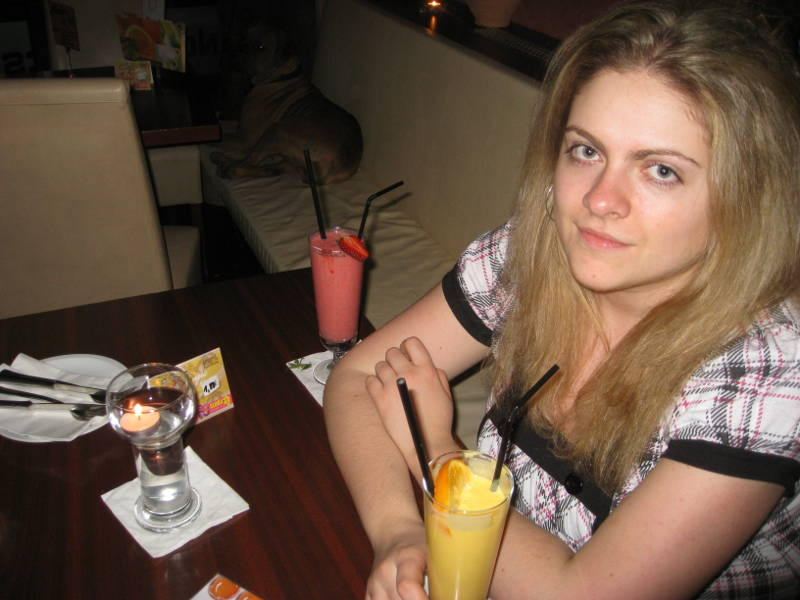
Aliona
downing a tasty mango drink at an Indian restaurant, very late at
night. Guess who's drinking that girly looking strawberry drink
behind her?
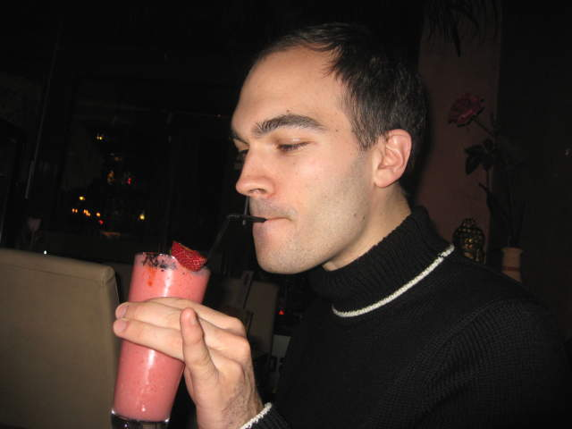
That's right. Me! Note the raised pinky.
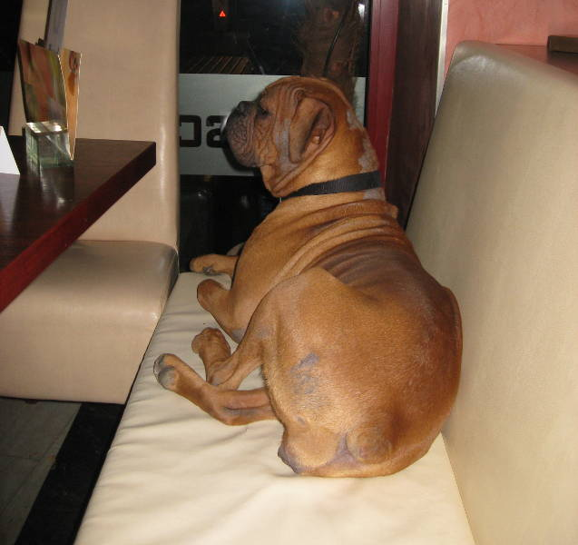
In
this restaurant, there was a big dog lounging on the seat to my right.
While I'm quite sure back home, an animal this size would
have been reported and perhaps tranquilized by authorities...
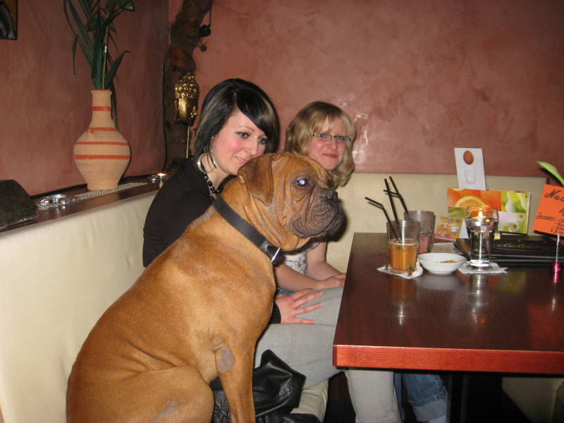
...here in Berlin he was just one of the customers.
Sachsenhausen Concentration Camp
Back